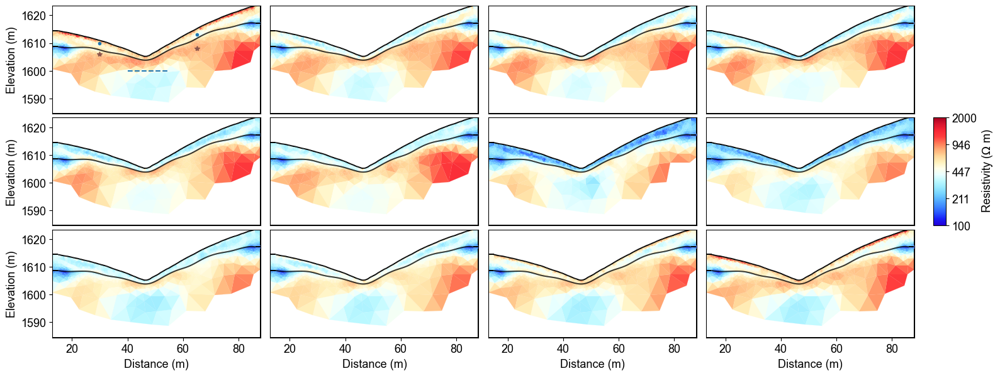
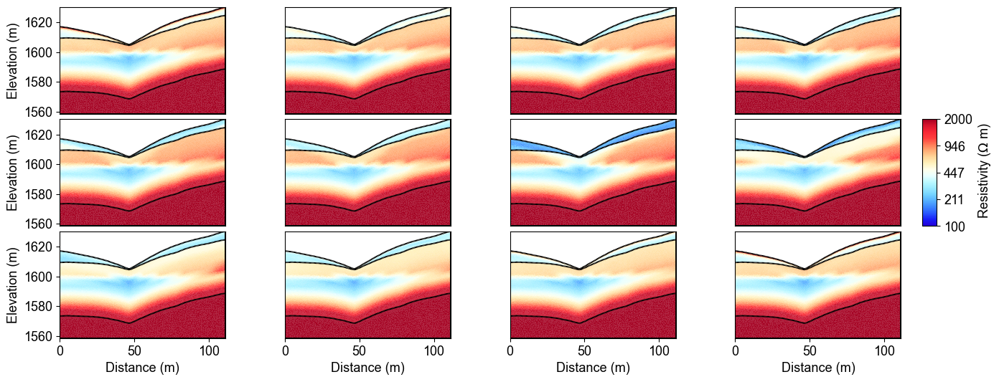

Note
Go to the end to download the full example code.
Ex. Structure-Constrained Time-Lapse Resistivity Inversion#
This example demonstrates advanced time-lapse ERT inversion using structural constraints derived from seismic interpretation to monitor subsurface water content changes in layered geological media.
The comprehensive workflow includes:
Loading pre-existing meshes with geological structure from seismic interpretation
Configuring windowed time-lapse ERT inversion with structural constraints
Processing 12 months of synthetic ERT measurements
Comparing structure-constrained results with true resistivity models
Analyzing temporal evolution at monitoring points within geological layers
Quantifying the improvement gained from structural constraints
This advanced approach provides the most reliable estimates of subsurface water content evolution by integrating temporal, spatial, and geological constraints in a unified inversion framework.
Key advantages of structure-constrained inversion: * Sharp geological boundaries preserved throughout time series * Reduced artifacts from unconstrained regularization * Improved resolution of layered structures * Enhanced compatibility with hydrogeological interpretations * Better temporal coherence in monitoring applications
This technique is particularly valuable for watershed monitoring, groundwater management, and landslide early warning systems where geological structure plays a critical role in subsurface flow patterns.
import os
import sys
import numpy as np
import matplotlib.pyplot as plt
import pygimli as pg
from pygimli.physics import ert
from mpl_toolkits.axes_grid1 import make_axes_locatable
# Setup package path for development
try:
# For regular Python scripts
current_dir = os.path.dirname(os.path.abspath(__file__))
except NameError:
# For Jupyter notebooks
current_dir = os.getcwd()
# Add the parent directory to Python path
parent_dir = os.path.dirname(current_dir)
if parent_dir not in sys.path:
sys.path.append(parent_dir)
# Import PyHydroGeophysX modules
from PyHydroGeophysX.inversion.time_lapse import TimeLapseERTInversion
from PyHydroGeophysX.inversion.windowed import WindowedTimeLapseERTInversion
time_lapse_data_dir = os.path.join(current_dir, "data", "TL_measurements")
data_dir = os.path.join(time_lapse_data_dir, "appres")
structure_output_dir = os.path.join(current_dir, "results", "Structure_WC")
os.makedirs(structure_output_dir, exist_ok=True)
# List of ERT data files testing monthly time-lapse inversion
ert_files = [
"synthetic_data30.dat",
"synthetic_data60.dat",
"synthetic_data90.dat",
"synthetic_data120.dat",
"synthetic_data150.dat",
"synthetic_data180.dat",
"synthetic_data210.dat",
"synthetic_data240.dat",
"synthetic_data270.dat",
"synthetic_data300.dat",
"synthetic_data330.dat",
"synthetic_data360.dat",
]
# Full paths to data files
data_files = [os.path.join(data_dir, f) for f in ert_files]
# Measurement times (can be timestamps or any sequential numbers representing time)
# Measurement times (can be timestamps or any sequential numbers representing time)
measurement_times = [1, 2, 3, 4, 5, 6, 7, 8, 9, 10, 11, 12] # Adjust based on your actual acquisition times
# Create a mesh for the inversion (or load an existing one)
data = ert.load(os.path.join(data_dir, ert_files[0]))
ert_manager = ert.ERTManager(data)
mesh_with_interface = pg.load(
os.path.join(structure_output_dir, "mesh_with_interface.bms")
)
# Set up inversion parameters
inversion_params = {
"lambda_val": 5.0, # Regularization parameter
"alpha": 5.0, # Temporal regularization parameter
"decay_rate": 0.0, # Temporal decay rate
"method": "cgls", # Solver method ('cgls', 'lsqr', etc.)
"model_constraints": (0.001, 1e4), # Min/max resistivity values (ohm-m)
"max_iterations": 15, # Maximum iterations
"absoluteUError": 0.0, # Absolute data error (V)
"relativeError": 0.05, # Relative data error (5%)
"lambda_rate": 1.0, # Lambda reduction rate
"lambda_min": 1.0, # Minimum lambda value
"inversion_type": "L2" # 'L1', 'L2', or 'L1L2'
}
# Define the window size (number of timesteps to process together)
window_size = 3 # A window size of 3 means each window includes 3 consecutive measurements
# Create the windowed time-lapse inversion object
inversion = WindowedTimeLapseERTInversion(
data_dir=data_dir, # Directory containing ERT data files
ert_files=ert_files, # List of ERT data filenames
measurement_times=measurement_times, # List of measurement times
window_size=window_size, # Size of sliding window
mesh=mesh_with_interface, # Mesh for inversion
**inversion_params # Pass the same inversion parameters
)
# Run the inversion, optionally in parallel
print("Starting windowed time-lapse inversion...")
window_parallel = os.environ.get("PHGX_WINDOW_PARALLEL", "0").strip().lower() in {
"1", "true", "yes", "on",
}
max_window_workers = int(os.environ.get("PHGX_WINDOW_WORKERS", "2"))
result = inversion.run(
window_parallel=window_parallel,
max_window_workers=max_window_workers,
)
print("Inversion complete!")
result.final_models = np.array(result.final_models)
result.final_models.shape
result.all_coverage = np.array(result.all_coverage)
result.all_coverage.shape
parameter_indices = np.asarray(result.mesh.cellMarkers(), dtype=int)
cell_resistivity = result.final_models[parameter_indices, :]
cell_coverage = result.all_coverage[:, parameter_indices]
# Preserve the geological layer assigned on the structure mesh. The inversion
# result mesh uses its cell markers as parameter indices, so those markers must
# not be used as geological unit identifiers in the hydrology example.
geological_markers = np.empty(result.mesh.cellCount(), dtype=int)
for cell_index, cell in enumerate(result.mesh.cells()):
source_cell = mesh_with_interface.findCell(cell.center())
if source_cell is None:
raise RuntimeError(
f"Could not map inversion cell {cell_index} to the structure mesh."
)
geological_markers[cell_index] = source_cell.marker()
np.save(os.path.join(structure_output_dir, "resmodel.npy"), cell_resistivity)
np.save(os.path.join(structure_output_dir, "all_coverage.npy"), cell_coverage)
np.save(os.path.join(structure_output_dir, "index_marker.npy"), geological_markers)
result.mesh.save(os.path.join(structure_output_dir, "mesh_res.bms"))
from palettable.lightbartlein.diverging import BlueDarkRed18_18
import matplotlib.pyplot as plt
import numpy as np
import matplotlib.pylab as pylab
params = {'legend.fontsize': 13,
#'figure.figsize': (15, 5),
'axes.labelsize': 13,
'axes.titlesize':13,
'xtick.labelsize':13,
'ytick.labelsize':13}
pylab.rcParams.update(params)
plt.rcParams["font.family"] = "Arial"
fixed_cmap = BlueDarkRed18_18.mpl_colormap
fig = plt.figure(figsize=[16, 6])
# Use tight_layout with adjusted parameters to reduce space
plt.subplots_adjust(wspace=0.05, hspace=0.05)
# True resistivity model
for i in range(12):
row, col = i // 4, i % 4
ax = fig.add_subplot(3, 4, i+1)
# Add common ylabel only to leftmost panels
ylabel = "Elevation (m)" if col == 0 else None
# Add resistivity label only to the middle-right panel (row 1, col 3)
resistivity_label = r' Resistivity ($\Omega$ m)' if (i == 7) else None
# Only show axis ticks on leftmost and bottom panels
if col != 0:
ax.set_yticks([])
if row != 2: # Not bottom row
ax.set_xticks([])
else:
# Add "distance (m)" label to bottom row panels
ax.set_xlabel("Distance (m)")
# Create the plot
ax, cbar = pg.show(result.mesh,
result.final_models[:,i][result.mesh.cellMarkers()],
pad=0.3,
orientation="vertical",
cMap=fixed_cmap,
cMin=100,
cMax=2000,
ylabel=ylabel,
label=resistivity_label,
ax=ax,
logScale=True,
coverage=result.all_coverage[i][result.mesh.cellMarkers()]>-1.2)
if i ==0:
ax.plot([30],[1610],'.',c='tab:blue')
ax.plot([65],[1613],'.',c='tab:blue')
ax.plot([30],[1606],'.',c='tab:brown')
ax.plot([65],[1608],'.',c='tab:brown')
ax.plot([40,55],[1600,1600],ls='--',c='k')
ax.plot([40,55],[1600,1600],ls='--',c='k')
# Only keep colorbar for the middle-right panel (row 1, col 3)
# This corresponds to panel index 7 in a 0-based indexing system
if i != 7: # Keep only the colorbar for panel 7
cbar.remove()
plt.tight_layout()
plt.savefig(
os.path.join(structure_output_dir, "timelapse_ert_with_structure.tiff"),
dpi=300,
bbox_inches="tight",
)
Structure-Constrained Time-Lapse Inversion Results#
The structure-constrained time-lapse inversion successfully monitors water content changes over 12 months while honoring geological boundaries derived from seismic interpretation. The mesh incorporates structural interfaces that guide the inversion process, resulting in sharper layer boundaries and more geologically consistent resistivity distributions.
Key Features:
Sharp layer boundaries: Structural constraints maintain distinct geological interfaces
Temporal coherence: Smooth evolution between consecutive monthly measurements
Monitoring points: Colored dots indicate locations for detailed time-series analysis - Blue dots: Upper regolith monitoring points - Brown dots: Fractured bedrock monitoring points - Dashed line: Major geological interface from seismic data
Coverage-based quality: Gray areas indicate regions with poor data coverage
The windowed inversion approach processes overlapping groups of measurements, providing computational efficiency while maintaining temporal consistency across the 12-month monitoring period.
{kind=link}

%% plot the true resistivity model
fixed_cmap = BlueDarkRed18_18.mpl_colormap
fig = plt.figure(figsize=[16, 6])
mesh = pg.load(os.path.join(time_lapse_data_dir, "mesh.bms"))
# Use tight_layout with adjusted parameters to reduce space
plt.subplots_adjust(wspace=0.05, hspace=0.05)
# True resistivity model
for i in range(12):
row, col = i // 4, i % 4
ax = fig.add_subplot(3, 4, i+1)
# Add common ylabel only to leftmost panels
ylabel = "Elevation (m)" if col == 0 else None
# Add resistivity label only to the middle-right panel (row 1, col 3)
resistivity_label = r' Resistivity ($\Omega$ m)' if (i == 7) else None
# Only show axis ticks on leftmost and bottom panels
if col != 0:
ax.set_yticks([])
if row != 2: # Not bottom row
ax.set_xticks([])
else:
# Add "distance (m)" label to bottom row panels
ax.set_xlabel("Distance (m)")
# Create the plot
ax, cbar = pg.show(mesh,
np.load(
os.path.join(time_lapse_data_dir, "resistivity_mesh.npy"),
mmap_mode="r",
)[(i + 1) * 30],
pad=0.3,
orientation="vertical",
cMap=fixed_cmap,
cMin=100,
cMax=2000,
ylabel=ylabel,
label=resistivity_label,
ax=ax,
logScale=True)
if i != 7: # Keep only the colorbar for panel 7
cbar.remove()
True Resistivity Model Comparison#
The true resistivity models show the actual subsurface conditions used to generate the synthetic ERT data. Comparing these reference models with the structure-constrained inversion results demonstrates the effectiveness of incorporating geological constraints.
Comparison Analysis:
Layer definition: True models show distinct geological boundaries that should be preserved
Temporal variations: Seasonal changes in resistivity reflect water content evolution
Structural consistency: Sharp interfaces between regolith, fractured, and fresh bedrock
Validation reference: These models serve as ground truth for inversion quality assessment
The structure-constrained inversion successfully recovers the main geological features while accurately tracking temporal resistivity changes, demonstrating the value of integrating geophysical constraints in time-lapse monitoring.
{kind=link}

Summary and Best Practices#
This example demonstrated the complete workflow for structure-constrained time-lapse ERT inversion in watershed monitoring applications: * Successfully integrated seismic-derived structural constraints with ERT inversion * Implemented windowed processing for computational efficiency * Maintained geological consistency while tracking temporal changes * Achieved high-quality results suitable for quantitative hydrological interpretation